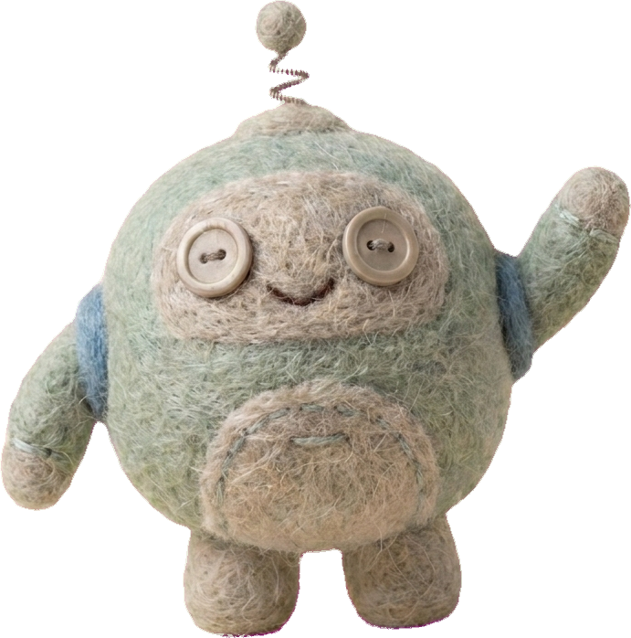

ADK 2 · Marathon Coach
Your Learning Roadmap
known structure → known team, variable subset → unknown shape → choose
Pillar 1
Graph
Graph
L0
First Agent
L1
First Workflow
L2a
Parallel + Join
L2b
Router
Pillar 2
Collaborative
Collaborative
L3
Concierge
one coordinator · the request picks the subset
🩺 medical🌦️ weather⏱️ pacing
🎽 gear🥤 nutrition🧠 mental
Pillar 3
Dynamic
Dynamic
L4a
Runtime Width
L4b
Recursion
🏁
L5 · Which Pattern
doneyou are hereup next